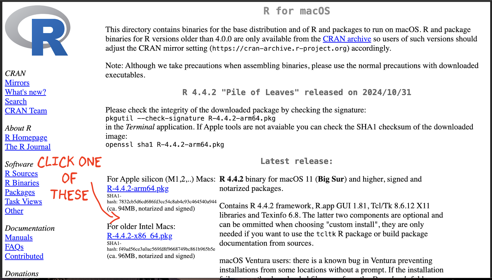
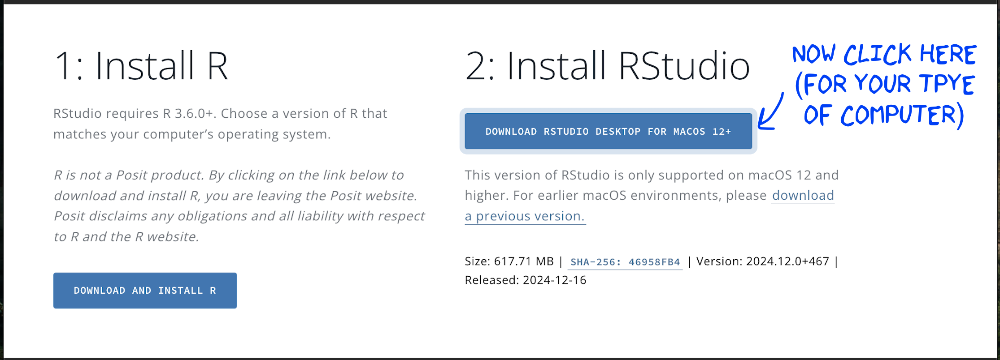
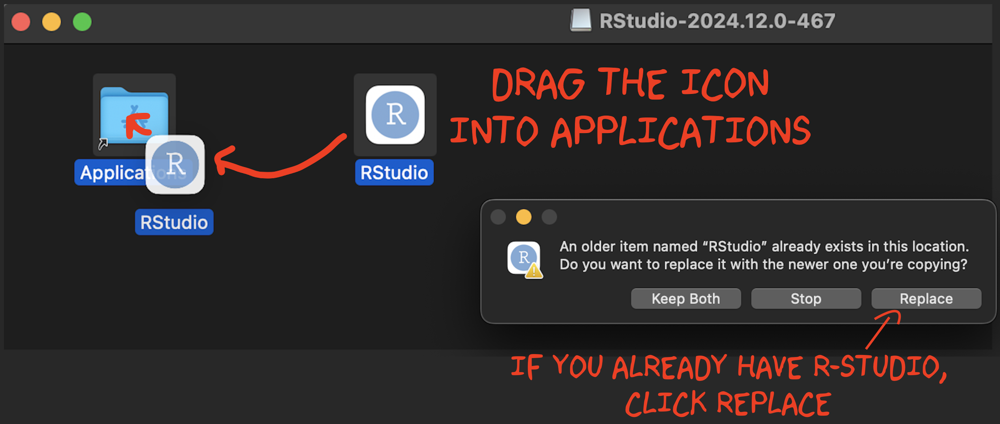

ABOUT R - update
Much of this course is going to be based on two pieces of software, R and R-Studio. Today we are going to install them.
1 A. Posit Cloud Online
R and R studio are available online for anyone to use for free, as part of a company called Posit-Cloud. Although you can also use your laptop, I want EVERYONE to have an account.
- Go to https://posit.cloud/ and click “Get started”. Make a free account. We will come back to this later
2 Using R/R-Studio on your laptop
Optionally, you can use your own computer and laptop to complete the home-works and labs. We need TWO pieces of software to run your labs. The “R” Software teaches your computer to ‘speak’ R. This is why the R version is so important. Using an early version is like teaching your computer to speak Shakespearean English! The R-Studio software is like a programming version of Microsoft Word. It lets you work using the R language and has many nice features.
QU. I already have R & R-Studio! Do I need to complete this section?
- YES! Both R and R-Studio change regularly, so I want everyone to be running the most up-to-date version and you will be graded on this in HW1. This should not hurt any of your other work. To update, follow the instructions below.
QU. I have a very old computer, will this work?
- If you have a very old computer, this might not work. In that case, it’s OK! You can use the Posit Cloud website. You’re welcome to try the install and I’m happy to support you.
2.1 i. Installing/Updating R
STEP 1
Go to https://posit.co/download/rstudio-desktop/#download.
Scroll down and you should see something like this.

STEP 2
Now click on DOWNLOAD AND INSTALL
R. It will take you to a scary looking website called Cran R.
Click
the “INSTALL R” for your computer type.
STEP 3
The setup looks a little different
depending on whether you are on a Windows Machine or a Mac:
WINDOWS people, Click the arrow to show your instructions

Click “Installing R for the first time”, EVEN IF YOU ARE UPDATING R-STUDIO
This will download a file. Double click to install. You do not need a shortcut on your desktop (because we will use R studio to access it)
MAC people, Click the arrow to show your instructions

There are two potential options for you to download - only one will work, so it’s easy to try both if you’re not sure.
If your Mac is pretty new, try the top option.
If your Mac is more than a few years old, try the second option.
This will download a file. Double click to install. If it doesn’t work, try downloading the other one.
It might say that you cannot open the file because of safety concerns. If that’s the case, click the magnifying-glass on the top right of your screen, search for settings, click on the security tab and click that it’s OK to open it. Then try again.
2.2 ii Installing/Updating R-Studio
STEP 5
Go back to https://posit.co/download/rstudio-desktop/#download.
Now click the other button. It should automatically download a file
onto your computer

IF YOU ARE USING WINDOWS: Double click and install as normal.
IF YOU ARE USING A MAC, double click, then drag the icon into applications.
Nothing should happen!If you already have R-studio, replace the current one.
(If you have an old mac this might be where it breaks, let Dr G know)
